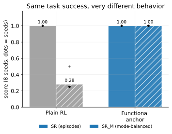
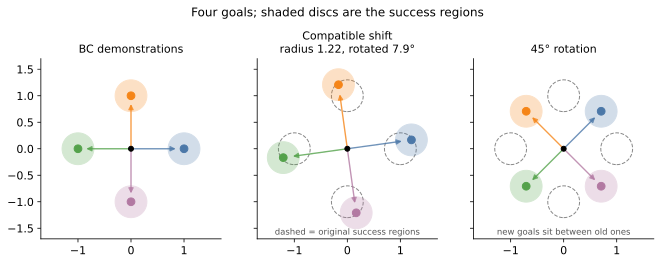
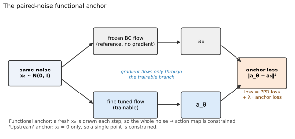
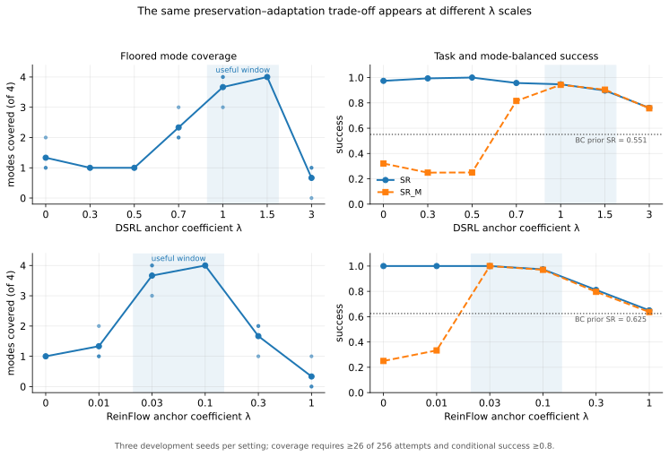

In multimodal policy fine-tuning, standard task success (\(\text{SR}\)) can completely conceal behavioral collapse. Plain DSRL scores \(\text{SR} = 1.000\), but collapses to a single mode (\(\text{SR}_M = 0.250, \text{mcf} = 1/4\)).
Core problem
Generative policies that use diffusion or flow for there action policy have the ability to represent different ways to solve a task, thereby having inherent multimodal behavior in them. When we do only BC and measure the entropy or modes we can see that the mulitmodality is presevered, but unfortunately when we do RL finetuning on them this often destroys the diversity and make the policy converge to one goal.

This failure can be suprisingly easy to miss , in this i used a fourgoal env where the policy gets equal reward when reaching one of the four goal , what we observed was that teh when doing RL fine tuning on them the unconstrained policy reached a 100% success while sending every trajectory to one goal, so if we judge only by task reward the policy is perfect.But if we judge by the behaviors ie the different goals it reaches the policy have completely collapsed.
We looked into two ways of doing this. - ** Functional anchoring ** , which discourages the fine tuned policy from changing the pretrained noise to action function too much. - Behavioral Mode Discovery for Fine-tuning Multimodal Generative Policies An already existing work from Longhini etal , which uses mutual information objective to make different latent skills produce different trajectories.
Main finding is that these mechanism solve different problem, and when combined works better than alone.
Functional anchoring preserves useful behaviors that are already present. Mutual information helps discover or reorganize behaviors when the old ones no longer solve the task.
This distinction is important because it is directly tied to the positive results and failure cases as well.
A small environment that epxoses mode collapse
The environment starts at the origin and contains four possible goals. Demonstrations reach four equally valid modes, so a BC policy can learn a multimodal distribution over trajectories.
We then change the reward landscape during RL fine-tuning in two ways:
- Compatible outward shift. The goals move farther from the origin and rotate by only 7.9 degrees. The old behavioral modes are still useful, but they must be extended and adjusted slightly. We call this the “radius-shift” setting below for brevity, but it is not a mathematically pure radius change.
- Rotation. The goals rotate by 45 degrees. Each new goal lies between two old demonstration directions, so merely preserving the old modes is insufficient.
These shifts create a useful controlled comparison:
Outward + 7.9° shift → preserve and adapt existing modes
45° rotation → reorganize or discover modes
Success rate is not enough
Suppose all rollouts reach one goal and ignore the other three. Overall success is still 100%, even though the policy has retained only one quarter of the intended behavior. So i reuse the same metrics used in the Behavior mode Discovery paper.
- SR: overall task success.
- SR_M: success averaged across the four modes rather than across episodes.
- Mode coverage: the number of modes whose conditional success is at least 80%, with a minimum-attempt requirement.
- Successful-mode entropy: how evenly successful trajectories are distributed among the modes.
The minimum attempt rule matters since a mode visited once with one successful episode should not count as reliably solved.
Every final policy was evaluated for 1,024 episodes per training seed. These episodes improve the precision of evaluating one policy; the independent training seeds measure the variability of the learning algorithm.
Functional anchoring
Let \(f_0(s,\epsilon)\) be the pretrained policy’s action for state \(s\) and noise \(\epsilon\), and let \(f_\theta(s,\epsilon)\) be the fine-tuned policy. The functional anchor is
\[ \mathcal L_{\text{anchor}} = \mathbb E_{s,\epsilon} \left[ \left\|f_\theta(s,\epsilon)-\operatorname{sg}\!\left(f_0(s,\epsilon)\right)\right\|^2 \right]. \]
The same noise is being passed through teh current and reference (detached ) policies. The idea being the loss preserves not only the overall action distribution but also the correspondence between regions of noise space and behaviors. On a high level if one noise region orginially produced an upward trajectory and other produced a leftward trajectory in the base frozen BC policy , the anchor makes it costly to remap both regions onto a single direction during RL .

The coefficient \(\lambda\) controls a familiar trade-off:
weak anchor → reward dominates; modes can collapse
moderate anchor → adaptation with behavioral preservation
strong anchor → reference is preserved, but adaptation may be blockedThis is very much related to Flow Q-Learning (FQL). FQL trains a one-step actor to maximize an offline critic while matching the action produced by a pretrained flow for the same sampled noise. It also interprets this shared-noise squared error as an upper bound on the Wasserstein distance between their action distributions. The regularizer and its transport interpretation are therefore not new here.
The role of regualizer is different in this study. FQL distills a multi-step flow into a separately deployed one-step policy using offline dataset states and Q-learning. We instead use the paired loss as a behavioral trust region during online PPO fine tuning , either by steering a forzen diffusion decoder as in the case of DSRL or by updating teh multi-step flow directly as in the case of reinflow. ReinFlow’s paper contains a related paired-output objective; later we separately compare paired random noise with the released implementation’s single input \(x_0=0\).
The anchor has a working window
So we did a 10 seeded sweep on the different lamba values for both DSRL and reinflow to see the effective region of lamba for both DSRL and Reinflow. Each policy was evaluated for 256 episodes. For a consistent comparison, we recomputed coverage from the saved attempt counts using the same floor, a mode requires at least 26 attempts and at least 80% conditional success.

These are not universal values, the numerical value of lambda might depend on policy backend, action normalization , and the task. This to show that both under regularization and over regularization are real failure modes.
When the old modes remain useful
DSRL: preserving decoded behavior during noise steering
Functional anchoring was first testesd with DSRL where the pretraiend diffusion policy remain frozen as n action decoder , while PPO trains a steering policy that transforms its input noise. The anchor compares the action decoded from the steered noise with the reference action decoded from the corresponding unsteered noise.
The compatible outward shift is favorable to preservation , it might be because the pretrained BC trajectory distribution already point in useful direction and the new goal only needed to travel further and rotate slightly. Plain reward only DSRL adapted to new goal , but lost diversity and collapsed to one goal.
For the final DSRL radius-shift study:
| Method | SR | SR_M | Coverage | Successful-mode entropy |
|---|---|---|---|---|
| BMD | 0.993 | 0.943 | 3.80/4 | 0.911 |
| Functional anchor | 0.956 | 0.954 | 4.00/4 | 0.951 |
The average difference does not tell the whole story. BMD usually performed extremely well, but one seed dropped to two covered modes. Functional anchoring covered all four modes in every final seed. Across the two radius-shift batches, it achieved full coverage in 18/18 seeds, compared with 14/18 for BMD.
ReinFlow: separating adaptation from diversity
Another experiment was conducted with reinflow to see the working of functional anchor with an flow based PPO fine tuning. Five different experiments were done
- freezing the policy;
- retaining stochasticity through a trainable noise head;
- unconstrained reward optimization;
- anchoring only the flow output at \(x_0=0\);
- anchoring outputs over randomly sampled, shared noise.
The final results were:
| ReinFlow variant | λ | SR | SR_M | Floored coverage | Successful-mode entropy |
|---|---|---|---|---|---|
| Frozen | — | 0.567 | 0.556 | 0/4 | 0.970 |
| Noise-only | — | 0.526 | 0.515 | 0/4 | 0.968 |
| Plain RL | — | 1.000 | 0.281 | 1.00/4 | 0.001 |
| Upstream anchor, \(x_0=0\) | 0.01 | 1.000 | 0.906 | 2.25/4 | 0.571 |
| Functional paired-noise anchor | 0.03 | 1.000 | 1.000 | 4.00/4 | 0.955 |
Here fully frozen means both the pretained mean velocity field and its exploration noise head network are held fixed. In noise head only control, the pretrained velocity field network remain frozen, while PPO updates the smaller head that predicts the transition std_dev \(\sigma(s,t)\). This can change hwo much noise is injected at each flow step, but not the mean direction. Final one trains both .
Each control fails in a different way:
- A fully frozen actor preserves diverse visitation but cannot adapt to the shifted task.
- Updating only the noise head changes stochasticity but still cannot move the mean behavior far enough to solve the shifted task reliably.
- Plain RL solves the task but collapses onto one mode.
- The single-point anchor helps, but constraining \(x_0=0\) might not help to in understanding what the flow does over the reset of the noise space.
- The paired-noise anchor constrains the sampled noise-to-action function and preserves every mode in every seed.
The frozen control also shows that the functional result is not simply obtained by refusing to learn. The frozen policy remained diverse but under reached the shifted goals, whereas the functionally anchored policy adapted and succeeded. So these suggest functional anchor helps in retaining the base BC policy behavioral structure and mode distributions.